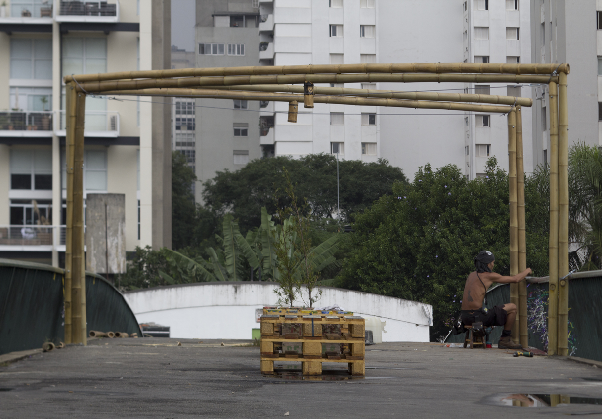
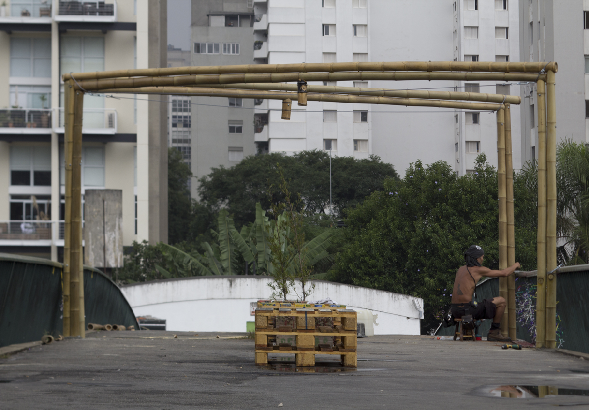

O Passanela teve como objetivo dar um novo significado à Passarela da Av. Rebouças (Hospital das Clínicas) e contribuir para que outras passarelas também pudessem ser transformadas, chamando a atenção para a valorização do pedestre e tornando a sua experiência de passagem mais acessível, segura e confortável por meio da criação de um protótipo de intervenção urbana para requalificação da passarela, através de metodologias de design thinking, prototipação de baixa e alta fidelidade e financiamento coletivo.
Através do financiamento coletivo no Catarse, a Passarela da Av. Rebouças ganhou pequenas estruturas como bancos, sombras, sinalização e intervenções que melhorem a acessibilidade do local.

 
